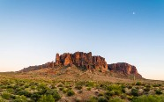
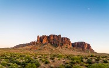
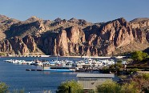
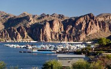

Mesa, Arizona
Population: with just over 500,000 residents, Mesa is the largest suburban city by population in the United States, larger than some better known cities, such as Minneapolis or Miami. It is the thrid largest city in Arizona, following Phoenix and Tucson.
History: The Hohokam People built the largest and most sophisticated system of canals in this area starting around 2,000 years ago before their dissapperance. The area was later inhabited by other people, such as the Apache. The area was settled by Mormon pioneers in three groups between 1877 and 1879. The opening of air fields at Falcon Field and William Field brought many military personnel to the area, followed by aviation companies such as Boeing. With the advent of air condiationing Mesa gradually transformed from an agricultual community into a suburb of Phoenix.
Upcoming Events
Crossroads of The West Gun Shows - Jan 1
Art & Craft Festival - Jan 8
Southwest Gospel Music Festival - Jan 13
Gallery
 



 
